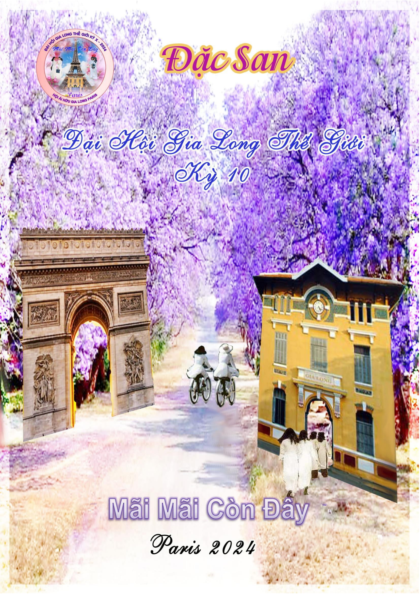

ĐẠI HỘI GIA LONG THẾ GIỚI KỲ X PARIS PHÁP
Thư Ban Báo Chí
*
Paris, ngày 12 tháng 10 năm 2024
Kính gởi quý vị Giáo sư,
Thân gởi các chị em Gia Long,
Ban Báo chí nhận thấy một số Giáo sư và chị em Gia Long trên thế giới mong muốn được cầm quyển Đặc san ĐH X trong tay nhưng rất tiếc ấn phẩm có giới hạn.
Để đáp ứng nhu cầu của độc giả, chúng tôi xin tải nội dung quyển báo ĐH Paris vào trang Báo chí, quý vị có hai chọn lựa : tự in bài mình thích hoặc đọc trên máy
Rất mong quý độc giả bốn phương được hài lòng với cách xem báo thời @.
Thân chào,
Ngọc Hạnh
Để tải Đặc San xuống , xin bấm vào hình dưới đây :